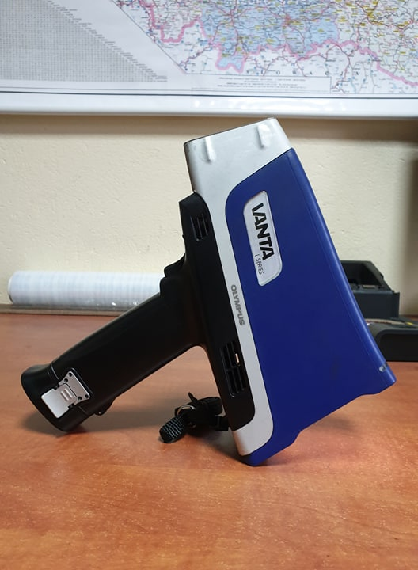

Czym zajmuje się nasza firma?
Nasza firma zajmuje się skupem złota, srebra, palladu oraz platyny. Ponadto, oferujemy najwyższe ceny oraz specjalistyczne pomiary dostarczonych metali za pomocą zaawansowanego sprzętu.

Skupujemy metale różnego rodzaju i niezależnie od jego postaci m.
in. biżuteria, sztabki, pierścionki. Jednym słowem - wszystko,
jeżeli posiada ilości metali. Przy pomocy profesjonalnego sprzętu
oceniamy zawartość metali w danej rzeczy i dokonujemy odpowiedniej
wyceny.
Istnieje możliwość dojazdu do klienta na życzenie.